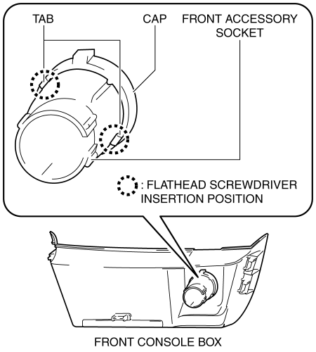
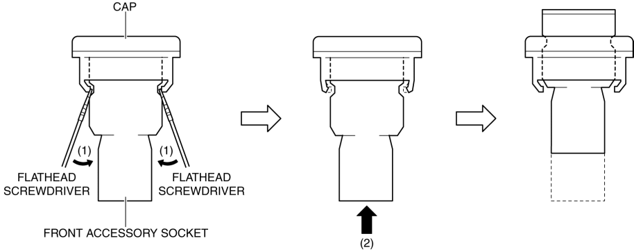
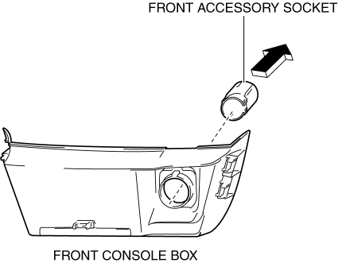
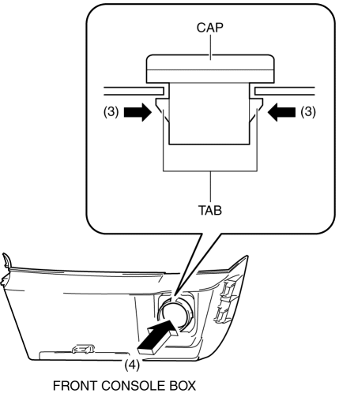

< Previous
Next >
2014 -
Mazda6 -
Body and Accessories
FRONT ACCESSORY SOCKET REMOVAL/INSTALLATION
1. Disconnect the negative battery cable. (See NEGATIVE BATTERY CABLE DISCONNECTION/CONNECTION [SKYACTIV-G 2.5].)
2. Remove the following parts: a. Upper panel (See UPPER PANEL REMOVAL/INSTALLATION.)
b. Shift lever knob (MTX) (See MANUAL TRANSAXLE SHIFT MECHANISM REMOVAL/INSTALLATION [C66M-R].)
c. Selector lever knob (ATX) (See AUTOMATIC TRANSAXLE SHIFT MECHANISM REMOVAL/INSTALLATION.)
d. Shift panel (See SHIFT PANEL REMOVAL/INSTALLATION.)
e. Front console box (See FRONT CONSOLE BOX REMOVAL/INSTALLATION.)
3. Insert a tape-wrapped flathead screwdriver into the gap between the cap tab and socket.

4. Move the flathead screwdriver in the direction of the arrows (1) shown in the figure, and press the front accessory socket in the direction of the arrow (2) shown in the figure to detach the cap tabs from the socket.

5. Pull the front accessory socket in the direction of the arrow shown in the figure and remove it.

6. While pressing the cap tabs in the direction of arrows (3) shown in the figure, press the cap in the direction of arrow (4) shown in the figure to detach the cap tabs from the front console box.

7. Remove the cap.
8. Install in the reverse order of removal.
< Previous
Next >
© 2012 Mazda North American Operations, U.S.A.